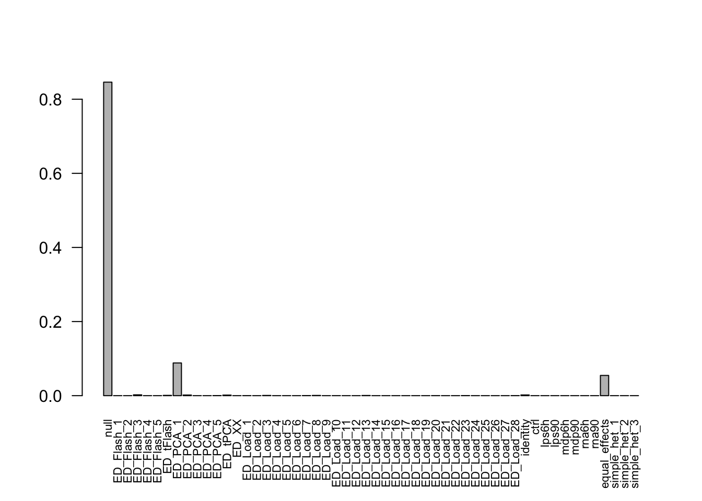
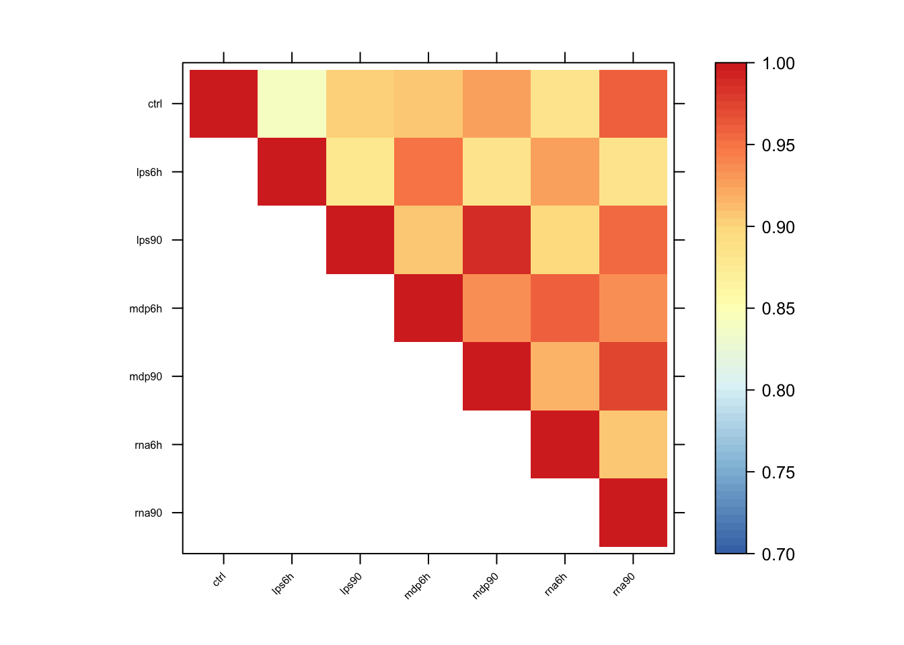

Last updated: 2018-01-07
Code version: e92eeac
library(lattice)
library(ggplot2)
library(colorRamps)
library(mashr)Loading required package: ashrlibrary(corrplot)corrplot 0.84 loadeddata = readRDS('../data/ImmuneQTLSummary.4MASH.rds')
data$max$se = data$max$beta/data$max$z
data$null$se = data$null$beta / data$null$z
K = 10
P = 5
vhat = 1if (vhat == 1) {
V = cor(data$null$z[which(apply(abs(data$null$z),1, max) < 2),])
} else {
V = diag(ncol(data$null$z))
}
mash_data = mashr::set_mash_data(Bhat = as.matrix(data$max$beta),
Shat = as.matrix(data$max$se),
V = as.matrix(V),
alpha = 1)# EZ
resEZ = readRDS('../output/ImmuneEZ.V1.center.mash_model.Load.K10.P5.rds')
resEZ$result = readRDS('../output/ImmuneEZ.V1.center.mash_posterior.Load.K10.P5.rds')The log-likelihood of fit is
get_loglik(resEZ)[1] 3201420The log likelihood is slightly higher than the original one EZ_V1_model, which is as we expected. There are more potential covariance structures added in the model.
Here is a plot of weights learned. The results are similar as before.
options(repr.plot.width=12, repr.plot.height=4)
barplot(get_estimated_pi(resEZ), las = 2, cex.names = 0.7)
Most of the mass is on the null, PCA1 and equal effects. mash placed 9.4814% of the mixture components weight on data-driven matrices, 5.4593% weight on equal effects matrix.
Pairwise sharing
x <- get_pairwise_sharing(resEZ)
colnames(x) <- colnames(get_lfsr(resEZ))
rownames(x) <- colnames(x)
x <- x[rev(rownames(x)),rev(colnames(x))]
x[lower.tri(x)] <- NA
clrs <- colorRampPalette(rev(c("#D73027","#FC8D59","#FEE090","#FFFFBF",
"#E0F3F8","#91BFDB","#4575B4")))(64)
n <- nrow(x)
options(repr.plot.width=9, repr.plot.height=9)
print(levelplot(x[n:1,],col.regions = clrs,xlab = "",ylab = "",
colorkey = TRUE, at = seq(0.7,1,length.out = 64),
scales = list(cex = 0.5,x = list(rot = 45))))
Among the 21485 top SNPs, MASH found 5541 to be significant in at least one treatment. We refer to these as the ‘top eQTLs’.
Using MASH, we found 5307 genes with an eQTL in control, 5234 genes with an eQTL in lps6h, 5313 genes with an eQTL in lps90, 5309 genes with an eQTL in mdp6h, 5340 genes with an eQTL in mdp90, 5305 genes with an eQTL in rna6h, 5381 genes with an eQTL in rna90.
In the original paper, they identified 717-1653 genes with an eQTL in each condition. So, we found more genes with an eQTL using MASH.
There are 4896 top eQTLs with significant effects among all treatments.
sessionInfo()R version 3.4.3 (2017-11-30)
Platform: x86_64-apple-darwin15.6.0 (64-bit)
Running under: macOS High Sierra 10.13.2
Matrix products: default
BLAS: /Library/Frameworks/R.framework/Versions/3.4/Resources/lib/libRblas.0.dylib
LAPACK: /Library/Frameworks/R.framework/Versions/3.4/Resources/lib/libRlapack.dylib
locale:
[1] en_US.UTF-8/en_US.UTF-8/en_US.UTF-8/C/en_US.UTF-8/en_US.UTF-8
attached base packages:
[1] stats graphics grDevices utils datasets methods base
other attached packages:
[1] corrplot_0.84 mashr_0.2-4 ashr_2.1-27 colorRamps_2.3
[5] ggplot2_2.2.1 lattice_0.20-35
loaded via a namespace (and not attached):
[1] Rcpp_0.12.14 compiler_3.4.3 git2r_0.20.0
[4] plyr_1.8.4 iterators_1.0.9 tools_3.4.3
[7] digest_0.6.13 evaluate_0.10.1 tibble_1.3.4
[10] gtable_0.2.0 rlang_0.1.6 Matrix_1.2-12
[13] foreach_1.4.4 yaml_2.1.16 parallel_3.4.3
[16] mvtnorm_1.0-6 stringr_1.2.0 knitr_1.17
[19] rprojroot_1.2 grid_3.4.3 rmarkdown_1.8
[22] rmeta_2.16 magrittr_1.5 backports_1.1.2
[25] scales_0.5.0 codetools_0.2-15 htmltools_0.3.6
[28] MASS_7.3-47 assertthat_0.2.0 colorspace_1.3-2
[31] labeling_0.3 stringi_1.1.6 lazyeval_0.2.1
[34] munsell_0.4.3 doParallel_1.0.11 pscl_1.5.2
[37] truncnorm_1.0-7 SQUAREM_2017.10-1This R Markdown site was created with workflowr